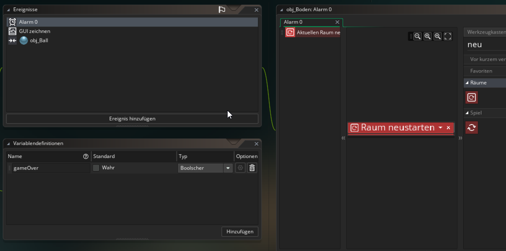

8 Game Over
Ziele
In diesem Kapitel wirst du einen GameOver Text einfügen, wenn der Ball hinunter fällt und das Spiel anschließend neu starten.
Wenn der Ball hinunter fällt, soll das Spiel verloren sein, ein GameOver Text angezeigt werden und nach ein paar Sekunden soll das Spiel neu starten.
7.1 Feststellen ob der Ball hinunterfällt¶
Eine einfache Möglichkeit festzustellen wenn der Ball hinunterfällt ist folgende:
Füge ein neues GameObject hinzu, nenne es obj_Boden und gib ihm das Sprite spr_Wand
Füge dann eine Instanz dieses Objekts außerhalb des Raums am unteren Spielfeldrand ein. (Es soll im Spiel nicht zu sehen sein)

Wenn der Ball nun mit diesem Objekt kollidiert, wissen wir, dass das Spiel verloren ist.
7.2 Game Over¶
Erstelle im obj_Boden eine Variable vom Typ Bool und nenne sie gameOver. Diese Variable soll zu Beginn false sein.

Erstelle dann ein Kollisionsereignis mit obj_Ball in dem folgende Dinge passieren sollen:
- gameOver auf true setzen
- Einen Alarm-Countdown starten, der festlegt nach wie vielen Sekunden das Spiel neu gestartet werden soll.
- Die Instanz des Balls zerstören (Bedenke hier, dass der Ball und nicht de Boden zerstört werden soll)
Dein Code sollte in etwa so aussehen:
Alarme
Ein Alarm in Gamemaker ist ein Timer, den man setzen kann. Es gibt zwölf verschiedene Alarme (Nummeriert von 0 bis 11)
Wenn man einen Alarm setzt zb. Alarm[0] auf 10 Dann wird nach 10 Sekunden das Ereignis Alarm 0 ausgelöst.
7.2.1 GameOver Text anzeigen¶
!!Tip "Hinweis" Wenn man in Gamemaker irgendetwas auf den Bildschirm malen möchte (z.B. einen Text anzeigen), dann muss man dies immer in einem Zeichnen-Ereignis machen!
Erstelle im obj_Boden ein GUI zeichnen Ereignis.
Überprüfe mit Wenn Variable ob gameOver true ist. Falls ja, dann zeichne mit dem Block Transformierten Wert Zeichnen den Text "Game Over" in die Bildschirmmitte.
(Mit den Blöcken Textausrichtung festlegen und Zeichenfarbe festlegen kannst du weitere Einstellungen vornehmen)

7.2.2 Spiel neu starten¶
Wenn der Alarm 0 ausgelöst wird (Dieser wurde in 7.2 gestellt) soll das Spiel neu gestartet werden.
Erstelle ein Ereignis Alarm 0 in obj_Boden und füge den Block Raum neu starten ein.

Teste!